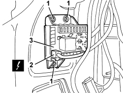
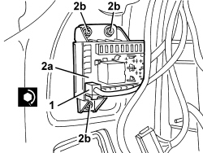
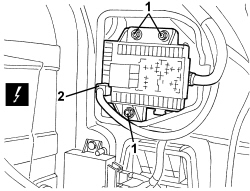

5505A14 SUPPLEMENTARY JUNCTION BOX IN LUGGAGE COMPARTMENT - R.R
- Path
- Procedures > 55 ELECTRICAL EQUIPMENT > 5505 INSTRUMENT/GAUGE ELECTRICAL CIRCUITS > 5505A MULTI-FUNCTION COMPONENTS > 5505A14 SUPPLEMENTARY JUNCTION BOX IN LUGGAGE COMPARTMENT - R.R
- Kind
- repair procedure (removal / refitting; the operation number is the code)
- Applies to
- all engines; all production periods
- Interactive page
- https://sloeber94.github.io/elrnDB/alfa/159/en/#/939010970
Applies to: all engines; all production periods
 Removing
Removing
 Refitting
RefittingOp. 7040B20 BACK TRIM FOR LUGGAGE COMPARTMENT/LOAD PLATFORM - ARRANGE
Op. 7040B10 LOAD PLATFORM (LUGGAGE PLATFORM) TRIM - R+R
Op. 7025B66 BOOT COMPARTMENT SEAL - R+R
Op. 7040B22 LUGGAGE COMPARTMENT/LOAD PLATFORM MOULDING - R+R
- Work on the left side of the luggage compartment.
Op. 7040B18 LOAD COMPARTMENT LOAD PLATFORM SIDE TRIM ONE LH OR RH - R.R
1. Undo the nuts.
2. Disconnect the electrical connection.
Description | Component |
|---|---|
LUGGAGE COMPARMENT JUNCTION UNIT (CVB) |
3. Move aside the control unit and disconnect the wiring retainers from the vehicle to move the control unit into a position where it can be disconnected from the rear terminals.

Applies to: all engines; all production periods
1. Mark the reciprocal position of all terminals (1a) connected to the control unit (1b).
2. Use the COPAT extractor set art. 530/S to disconnect the terminals (1a) from the control unit.
3. Keep the control unit.

Applies to: all engines; all production periods
Refitting
Removing- Check that the control unit is not damaged.
- Use the COPAT extractor set art. 530/S to connect the terminals to the control unit in accordance with the layout defined during removal.
- Connect the previously disconnected wiring retainers to the vehicle.
1. Connect the electrical connection.
2. Position control unit (2a) and tighten nuts (2b).
Component | Fastening | dia | Value (daNm) | Validity |
|---|---|---|---|---|
LUGGAGE COMPARTMENT JUNCTION UNIT | Nut | M6 | 0.7 ÷ 1.1 |

Applies to: all engines; all production periods
Op. 7040B18 LOAD COMPARTMENT LOAD PLATFORM SIDE TRIM ONE LH OR RH - R.R
Op. 7040B22 LUGGAGE COMPARTMENT/LOAD PLATFORM MOULDING - R+R
Op. 7025B66 BOOT COMPARTMENT SEAL - R+R
Op. 7040B10 LOAD PLATFORM (LUGGAGE PLATFORM) TRIM - R+R
Op. 7040B20 BACK TRIM FOR LUGGAGE COMPARTMENT/LOAD PLATFORM - ARRANGE
Applies to: all engines; all production periods; only with equipment: Station Wagon
Removing
RefittingOp. 7040G40 LOAD COMPARTMENT LIGHT BULB HOLDER - R R
Op. 7040B22 LUGGAGE COMPARTMENT/LOAD PLATFORM MOULDING - R+R
Op. 7040B04 SIDE MOULDING (ONE) LH OR RH FOR LUGGAGE COMPARTMENT - R.R.
Op. 7040B10 LOAD PLATFORM (LUGGAGE PLATFORM) TRIM - R+R
Op. 7040B18 LOAD COMPARTMENT LOAD PLATFORM SIDE TRIM ONE LH OR RH - R.R
1. Undo the nuts.
2. Disconnect the electrical connection.
Description | Components |
|---|---|
LUGGAGE COMPARMENT JUNCTION UNIT (CVB) |

Applies to: all engines; all production periods; only with equipment: Station Wagon
1. Move the control unit (1b) and mark the position of all the terminals (1a) connected to the actual control unit.
2. Use the COPAT extractor set art. 530/S to disconnect the terminals (1a) from the control unit.
3. Keep the control unit.

Applies to: all engines; all production periods; only with equipment: Station Wagon
Refitting
Removing- Check that the control unit is not damaged.
- Use the COPAT extractor set art. 530/S to connect the terminals to the control unit in accordance with the layout defined during removal.
- Connect the electrical connection.
- Position the control unit and tighten the nuts.
Component | Fastening | dia | Value (daNm) | Validity |
|---|---|---|---|---|
LUGGAGE COMPARTMENT JUNCTION UNIT | Nut | M6 | 0.7 ÷ 1.1 |
Op. 7040B18 LOAD COMPARTMENT LOAD PLATFORM SIDE TRIM ONE LH OR RH - R.R
Op. 7040B10 LOAD PLATFORM (LUGGAGE PLATFORM) TRIM - R+R
Op. 7040B04 SIDE MOULDING (ONE) LH OR RH FOR LUGGAGE COMPARTMENT - R.R.
Op. 7040B22 LUGGAGE COMPARTMENT/LOAD PLATFORM MOULDING - R+R
Topics linked from this page (8)
- 7025B66 BOOT COMPARTMENT SEAL - R+R
- 7040B04 SIDE MOULDING (ONE) LH OR RH FOR LUGGAGE COMPARTMENT - R.R.
- 7040B10 LOAD PLATFORM (LUGGAGE PLATFORM) TRIM - R+R
- 7040B18 LOAD COMPARTMENT LOAD PLATFORM SIDE TRIM ONE LH OR RH - R.R
- 7040B20 BACK TRIM FOR LUGGAGE COMPARTMENT/LOAD PLATFORM - ARRANGE
- 7040B22 LUGGAGE COMPARTMENT/LOAD PLATFORM MOULDING - R+R
- 7040G40 LOAD COMPARTMENT LIGHT BULB HOLDER - R R
- B045 LUGGAGE COMPARTMENT JUNCTION UNIT (CVB)
Topics that link to this page (17)
- 5505 INSTRUMENT/GAUGE ELECTRICAL CIRCUITS
- E1010 POWER SUPPLY SYSTEM - WIRING DIAGRAM
- E1010 POWER SUPPLY SYSTEM - COMPONENT LOCATION
- E3030 DEMISTING REARSCREEN AND REAR VIEW MIRRORS - WIRING DIAGRAM
- E3030 DEMISTING REARSCREEN AND REAR VIEW MIRRORS - COMPONENT LOCATION
- E3070 CIGAR LIGHTER/ CURRENT SOCKET - WIRING DIAGRAM
- E3070 CIGAR LIGHTER/ CURRENT SOCKET - COMPONENT LOCATION
- E3075 HEATED SEATS - WIRING DIAGRAM
- E3075 HEATED SEATS - COMPONENT LOCATION
- E3076 ELECTRICALLY ADJUSTABLE SEATS - WIRING DIAGRAM
- E3076 ELECTRICALLY ADJUSTABLE SEATS - COMPONENT LOCATION
- E3510 RADIO - WIRING DIAGRAM
- E3510 RADIO - COMPONENT LOCATION
- E3510 RADIO - WIRING DIAGRAM
- E3510 RADIO - COMPONENT LOCATION
- E3510 RADIO - WIRING DIAGRAM
- E3510 RADIO - COMPONENT LOCATION